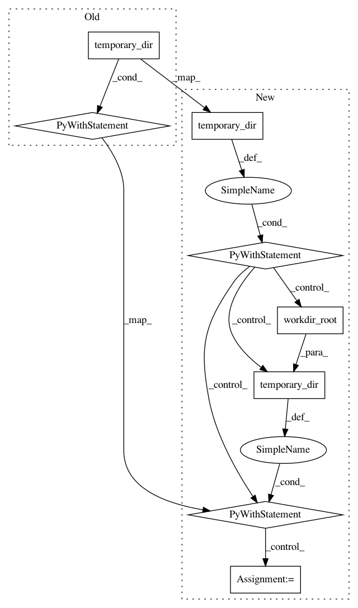

9ffe5262909ad9521e8cdf2beffd6e86330bd3bc,tests/python/pants_test/backend/jvm/tasks/jvm_compile/java/test_java_zinc_compile_integration.py,JvmExamplesCompileIntegrationTest,test_in_process,#JvmExamplesCompileIntegrationTest#Any#,25
Before Change
@provide_compile_strategies
def test_in_process(self, strategy):
with temporary_dir(root_dir=self.workdir_root()) as workdir:
pants_run = self.run_test_compile(
workdir, "examples/src/java/org/pantsbuild/example/hello/main", strategy,
extra_args=["--compile-zinc-java-enabled", "-ldebug"], clean_all=True
)
self.assertIn("Attempting to call com.sun.tools.javac.api.JavacTool", pants_run.stdout_data)
self.assertNotIn("Forking javac", pants_run.stdout_data)
@provide_compile_strategies
def test_log_level(self, strategy):
with temporary_dir(root_dir=self.workdir_root()) as workdir:
target = "testprojects/src/java/org/pantsbuild/testproject/dummies:compilation_failure_target"
After Change
@provide_compile_strategies
def test_in_process(self, strategy):
with temporary_dir(root_dir=self.workdir_root()) as workdir:
with temporary_dir(root_dir=self.workdir_root()) as cachedir:
pants_run = self.run_test_compile(
workdir, cachedir, "examples/src/java/org/pantsbuild/example/hello/main", strategy,
extra_args=["--compile-zinc-java-enabled", "-ldebug"], clean_all=True
)
self.assertIn("Attempting to call com.sun.tools.javac.api.JavacTool", pants_run.stdout_data)
self.assertNotIn("Forking javac", pants_run.stdout_data)
@provide_compile_strategies
def test_log_level(self, strategy):
with temporary_dir(root_dir=self.workdir_root()) as workdir:
with temporary_dir(root_dir=self.workdir_root()) as cachedir:
In pattern: SUPERPATTERN
Frequency: 3
Non-data size: 8
Instances
Project Name: pantsbuild/pants
Commit Name: 9ffe5262909ad9521e8cdf2beffd6e86330bd3bc
Time: 2015-07-20
Author: stuhood@gmail.com
File Name: tests/python/pants_test/backend/jvm/tasks/jvm_compile/java/test_java_zinc_compile_integration.py
Class Name: JvmExamplesCompileIntegrationTest
Method Name: test_in_process
Project Name: pantsbuild/pants
Commit Name: 9ffe5262909ad9521e8cdf2beffd6e86330bd3bc
Time: 2015-07-20
Author: stuhood@gmail.com
File Name: tests/python/pants_test/backend/jvm/tasks/jvm_compile/base_compile_integration_test.py
Class Name: BaseCompileIT
Method Name: do_test_compile
Project Name: pantsbuild/pants
Commit Name: 9ffe5262909ad9521e8cdf2beffd6e86330bd3bc
Time: 2015-07-20
Author: stuhood@gmail.com
File Name: tests/python/pants_test/backend/jvm/tasks/jvm_compile/java/test_java_zinc_compile_integration.py
Class Name: JvmExamplesCompileIntegrationTest
Method Name: test_log_level